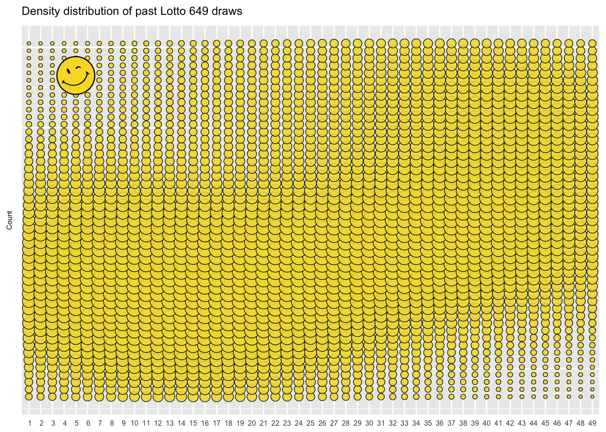

iXamin
Data, examined.
Lotto Numbers
A winning strategy.
2017-03-16
This article demonstrates use of the Rcpp package for fast iterations over millions of rows, and the rtweet package for communicating directly with your audience. Built with R version: 3.3.2. See the code at https://github.com/ixamin/ixamin.github.io.
It's a long shot, picking the grand prize number in Canada's 649 lottery, with odds of 1 in 13,983,816. It would be helpful to have frequent small wins to offset the likely recurring cost of staying in the game, hoping for the big one. To get "in the money" - having two out of six numbers for the same lottery (not including the bonus number) - the odds are considerably better: 1 in 8.3. The proposed strategy, then, is to pick numbers that frequently result in a match, and that have a bias toward winning a lower odds prize. The outcome will be the six out of forty-nine number combination that has the highest count of 2 or 3 number wins over all the previous draws. Let's see how to implement that strategy with R.
TL;DR The code discussed in this article automatically tweets numbers for each draw of Canada's LOTTOMAX & 649 lotteries. Follow @LottoMoto on Twitter to get yours.
Before I get to the programming fun, first a caveat: don't bet more than you can afford to lose on LottoMoto's number picks. The draws are uniformly random over time 1, even though the (relatively small) set of past draw numbers may not appear to be distributed that way.

Next draw predictions cannot be derived from the historical distribution of lotto numbers, despite my application of just the opposite of that principle in the following code.
Getting the data
Previously drawn numbers are available online. The XML package is used to scrape Ontario's lottery website.
# Gather historical draws
previous_draws <- as.list(
sort(
as.integer(
sapply(
XML::getNodeSet(
LOTTO649_page,
"//span[@class='winning-numbers-number']"),
function(x) XML::xmlValue(x)
)
)
)
)All 13,983,816 combinations to be tested are derived from:
# Build a matrix of all possible Lotto 649 combinations
combos <- t(
combn(
out_of,
amount_to_pick,
simplify = TRUE)
)Data processing
The goal is to iterate over the set of combinations, calculating a score for each based on the quality (the size of the prize), and frequency of "in the money" matches with previous draws.
Using only R functions to perform the iteratation will take a great deal of time. A naive approach is illustrated in the following function.
# A naive function to score combination matches with previous draws
fn_comboScore_R_iter <- function(min_matches,combos,previous_draws) {
scoreboard <- data.table()
for (rc in seq.int(nrow(combos))) {
combo_score <- 0L
draw_score <- 0L
for (rp in seq.int(nrow(previous_draws))) {
picked_score <- 0L
for (cc in seq.int(ncol(combos))) {
for (cp in seq.int(ncol(previous_draws))) {
if (combos[rc,cc] == previous_draws[[rp,cp]]) {
picked_score <- picked_score + 1L
}
}
}
if (picked_score >= min_matches) {
draw_score <- draw_score + picked_score
}
}
combo_score <- combo_score + draw_score
out <- data.table(score = combo_score, combo_numbers = list(combos[rc,]))
scoreboard <- rbindlist(list(scoreboard, out))
combo_score <- 0L
}
scoreboard[,idx := .I]
return(scoreboard[,.(idx,score)])
}Timing the iteration function on a sequence of increasing numbers of combinations provides the basis for predicting the total elapsed time to score all the combinations...
# Gather timing for increasing numbers of combinations
test_timings <- data.table()
sapply(seq(from = 1000, to = 5000, by = 500), function(x) {
set.seed(99)
combos <- combos[sample.int(nrow(combos),size = x,replace = FALSE),]
score_iter_time <- system.time(
scoreboard_iter <- fn_comboScore_R_iter(min_matches,combos,previous_draws)
)
timings_out <- data.table(
num_combos = x,
elapsed_minutes = round(score_iter_time[[1]]/60,4)
)
test_timings <<- rbindlist(list(test_timings,timings_out))
})# Predict duration for testing all combinations
timings_model <- lm(elapsed_minutes ~ num_combos,data = test_timings)
predict(timings_model,newdata = data.frame(num_combos=choose(49,6)))The predicted elapsed time to score all 13,983,816 combinations against the sample LOTTO649 220 record dataset is 14.9 days.
With a prize draw twice a week, taking over fourteen days to predict the numbers clearly isn't going to cut it. With R, run time may be extended if vector element type conversion is needed, and additional time is required on execution for memory management. Enter functionals, where R's typed vectors are passed to a program compiled in a lower level supporting language. The following code uses the functional apply(), written in C for performance. In contrast to R having to interpet it's program line by line at run time, the C program performs binary translation and memory allocation on all lines at compilation time. Where R can pass off work to a compiled program, the speed gains can be significant.
# Score combination matches with previous draws using a functional
fn_comboScore_R_vect <- function(min_matches,combos,previous_draws) {
scoreboard <- apply(previous_draws,1,
function(i) apply(combos,1,function(j) length(intersect(i,j))))
scoreboard[scoreboard < min_matches] <- 0
scoreboard <- as.data.table(scoreboard)
scoreboard[,score := as.integer(rowSums(.SD))]
scoreboard[,idx := .I]
return(scoreboard[,.(idx,score)])
}The elapsed time prediction using the functional to score all 13,983,816 combinations is reduced to 12 hours.
Still, half a day is considerable computing time. A significant further improvement can be realized by coding the iterations directly in C++ . The R code is connected to C++ by use of the Rcpp API.
# Using the Rcpp package to implement R's intersect() function in C++#include <Rcpp.h>
NumericMatrix comboScore(double amount_to_pick,
double out_of,
double min_matches,
IntegerMatrix combos,
IntegerMatrix previous) {
//size of previous draws matrix
int p_nrow = previous.nrow(), p_ncol = previous.ncol();
//for sizing results matrix and match iterating
int c_nrow = combos.nrow(), c_ncol = combos.ncol();
//sizing of results matrix
NumericMatrix results(c_nrow, c_ncol + 3);
//create vector to hold the combination to be tested
std::vector<int> combo;
combo.reserve(c_ncol);
//create vector to hold draw to be tested
std::vector<int> draw;
draw.reserve(p_ncol);
for (int cr = 0; cr < c_nrow; ++cr) {
if(cr % 100 == 0) Rcpp::checkUserInterrupt();
//reset the vector of drawn numbers
combo.clear();
for (int cc = 0; cc < c_ncol; ++cc) {
//populate the combo vector with the set of numbers to be tested
combo.push_back(combos(cr,cc));
}
//sort the combo vector in prep for set_intersection function
std::sort(combo.begin(),combo.end());
//(re)set the cr total score variable
double comboScore = 0.0;
//(re)set count of matched draws
double matchedDraws = 0.0;
//for every draw's previously drawn numbers
for (int pr = 0; pr < p_nrow; ++pr) {
//reset the vector of drawn numbers
draw.clear();
//(re)set the combination to draw score variable
double drawScore = 0.0;
for (int pc = 0; pc < p_ncol; ++pc) {
draw.push_back(previous(pr,pc));
}
//sort the draw vector in prep for set_intersection function
std::sort(draw.begin(),draw.end());
std::vector<int> match;
//return intersection of combo and draw vectors
std::set_intersection(combo.begin(),combo.end(),
draw.begin(),draw.end(),
std::back_inserter(match)
);
int match_size = match.size();
//a secret mix of frequency and quality metrics
//is used to calculate the score...
SecretSauce(amount_to_pick,
out_of,
match_size,
min_matches,
matchedDraws,
drawScore,
comboScore);
}
//keep only scores greater than zero
if (comboScore > 0) {
results(cr,0) = cr;
results(cr,1) = comboScore;
results(cr,2) = matchedDraws;
for (int i = 3; i < combo.size() + 3; ++i) {
results(cr,i) = combo[i-3];
}
}
}
return results;
}The elapsed time prediction using C++ to score all 13,983,816 combinations is 0.005373 of a day - that's only 7.7 minutes!
Switching from the naive approach first illustrated, to the the implementation of a C++ function cuts the computational time by 99.96%. A validation step confirms the outputs resulting from all three approaches are the same...
paste("Are the ITER scoreboard and VECT scoreboards the same?",
ifelse(identical(scoreboard_iter,scoreboard_vect),"Yes!","No."))## [1] "Are the ITER scoreboard and VECT scoreboards the same? Yes!"paste("Are the VECT scoreboard and CPP scoreboards the same?",
ifelse(identical(scoreboard_vect,scoreboard_cpp),"Yes!","No."))## [1] "Are the VECT scoreboard and CPP scoreboards the same? Yes!"Publishing the Numbers
With a scoreboard returned from the C++ comboScore function, it's a simple matter of sorting, selecting and reporting the top combination.
# Score all combinations using C++; sort results to get single "best" outcome
scoreboard <- data.table(comboScore(amount_to_pick,out_of,min_matches,combos,previous_draws))
setnames(scoreboard,
c("idx","score","matches","NUMBER.1","NUMBER.2","NUMBER.3","NUMBER.4","NUMBER.5","NUMBER.6"))
setorder(scoreboard,-score,-matches)
prediction <- scoreboard[1,
c("NUMBER.1","NUMBER.2","NUMBER.3","NUMBER.4","NUMBER.5","NUMBER.6")]
# prepare for prediction check...
prediction[, `:=`(DATE = as.Date(nextDraw(lottoname)), ITM_CNT = 0)]Publishing the result to Twitter takes only one line, thanks to the rtweet package.
# Post to LottoMoto's Twitter account
post_tweet(paste0("LottoMoto's ",
format(nextDraw(lottoname),"%b %d, %Y"),
" #LOTTO649 numbers are ",
paste(as.character(scoreboard[1,-c("idx","score","matches")]),collapse = ", "),
" #dreaming. Read about LottoMoto at ixamin.com/LottoNumbers.html"))Good News, Everyone!
Time for a reality check. Let's see just how well our strategy is working.
# Check outcomes, and publish when the algorith gets it right
# get the latest draw and last prediction...
previous_draws <- readRDS(paste0(lottoname,".rds"))
last_draw <- previous_draws[.N,
c("DRAW.DATE","NUMBER.DRAWN.1","NUMBER.DRAWN.2","NUMBER.DRAWN.3","NUMBER.DRAWN.4","NUMBER.DRAWN.5","NUMBER.DRAWN.6")]
predictions <- readRDS(paste0("Predictions_",lottoname,".rds"))
last_prediction <- predictions[1,
c("DATE","ITM_CNT","NUMBER.1","NUMBER.2","NUMBER.3","NUMBER.4","NUMBER.5","NUMBER.6")]
# find how many numbers from the last prediction match the latest draw...
ITM <- length(intersect(last_prediction[,-c("DATE","ITM_CNT")],last_draw[,-c("DRAW.DATE")]))
if (ITM >= min_matches ) {
# if "in the money", update the prediction with the number of matches
predictions[last_prediction, `:=`(ITM_CNT=ITM)]
last_prediction[, `:=`(ITM_CNT=ITM)]
# and tweet about winning
post_tweet(paste0("#GoodNewsEveryone LottoMoto's #LOTTO649 ",
format(last_prediction[,DATE],"%b %d"),
" prediction matched ",
last_prediction[,ITM_CNT],
" numbers in the ",
format(last_draw[,DRAW.DATE],"%b %d, %Y"),
" draw."))
}The prediction and checking code runs on a local PC, scheduled to run before and after the lottery draws . Please check in on Twitter to see how the LottoMoto bot is performing.
Pearson's chi-squared test applied to the set of historical 649 draws provides that confidence.
chisq_649_test <- chisq.test(table(lotto_numbers))results in a probability ofchisq_649_test$p.value= 0.5749085, higher than that typically agreed to be statistically significant (0.01 or 0.05). We therefore fail to reject the null hypothesis that the 649 numbers are drawn from the Uniform distribution.↩